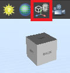
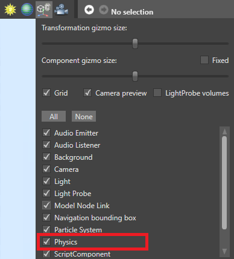
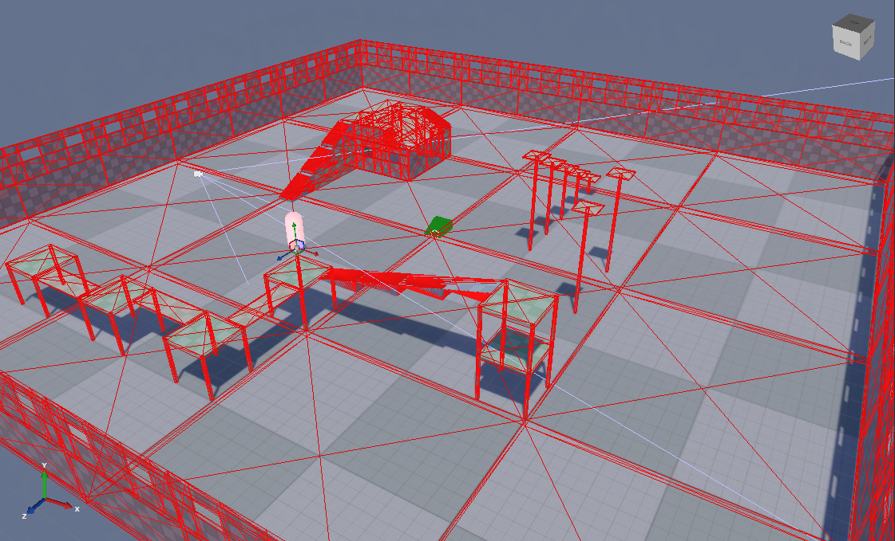
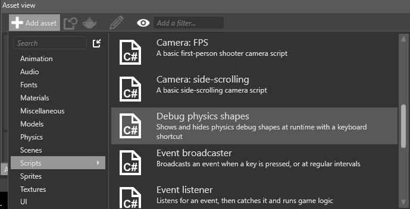
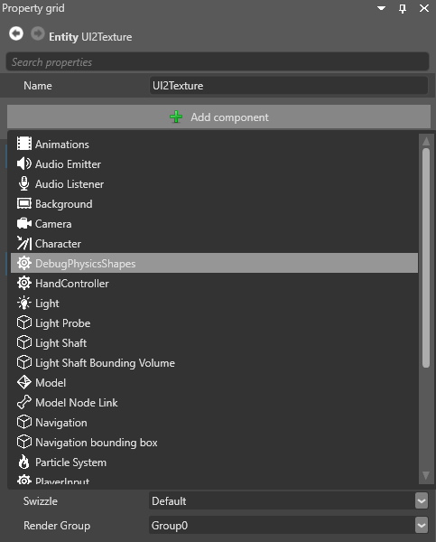

コライダー
初級 デザイナー
プロジェクトで物理特性を使用するには、コライダー コンポーネントをエンティティに追加します。
コライダーは、物理オブジェクトの形状とルールを定義します。コライダーには 3 つの種類があります。
- 静的コライダーは動きません (壁、床、重いオブジェクトなど)
- 剛体は、衝突や重力などの力によって動き回ります (ボール、銃身など)
- キャラクターは、ユーザーの入力によって制御されます (プレイヤー キャラクター)
また、以下のことが可能です。
- コライダー コンポーネントの形状を設定します
- トリガーを作成し、オブジェクトがそれを通り抜けたことを検出します
- 制約によってコライダーの動きを制限します
コライダーが相互作用する方法
コライダーは次の表に従って相互作用します。
| 運動学的オブジェクト | 運動学的トリガー | 剛体コライダー | 剛体トリガー | 静的コライダー | 静的トリガー | |
|---|---|---|---|---|---|---|
| 運動学的オブジェクト | 衝突 | 衝突 | 衝突および動的 | 衝突 | 衝突 | 衝突 |
| 運動学的トリガー | 衝突 | 衝突 | 衝突 | 衝突 | 衝突 | 衝突 |
| 剛体コライダー | 衝突および動的 | 衝突 | 衝突および動的 | 衝突 | 衝突および動的 | 衝突 |
| 剛体トリガー | 衝突 | 衝突 | 衝突 | 衝突 | 衝突 | 衝突 |
| 静的コライダー | 衝突 | 衝突 | 衝突および動的 | 衝突 | なし | なし |
| 静的トリガー | 衝突 | 衝突 | 衝突 | 衝突 | なし | なし |
「衝突」は、衝突情報とイベントのみを示します。つまり、衝突はコードで検出されますが、オブジェクトが相互に衝突することはありません (動的な反応はなし)。
「動的」とは、衝突情報とイベントに加えて動的な反応の両方を意味します (つまり、コライダーは通過するのではなく相互に衝突します)。
たとえば、剛体コライダーは静的コライダーと動的に衝突します (つまり相互に衝突する)。ただし、オブジェクトがトリガーと動的に衝突することはありません。コードで衝突が検出されますが、オブジェクトは通過するだけです。
シーン エディターでコライダーを表示する
既定では、コライダーはシーン エディターには表示されません。表示するには次のようにします。
Game Studio ツールバーの右上にある［Display gizmo options］アイコンを表示します。

［Physics］を選択します。

シーン エディターにコライダーの形状が表示されます。

実行時にコライダーを表示する
実行時にコライダーを表示できます。これは、物理特性に関する問題のデバッグに便利です。そのためには、次のようにします。
this.GetSimulation().ColliderShapesRendering = true;
Note
無限平面に対するコライダーの形状は常に表示されません。
キーボード ショートカット
キーボード ショートカットで実行時にコライダーの形状の表示/非表示を切り替えるには、Debug physics shapes スクリプトを使用します。
［Asset view］で［Add asset］をクリックします。
［Scripts］>［Debug physics shapes］の順に選択します。

Game Studio のツールバーで、［Reload game assemblies and update scripts］をクリックします。

Debug physics shapes スクリプトをコンポーネントとしてシーン内のエンティティに追加します。どのエンティティでもかまいません。

スクリプトがコライダーの形状の可視性を左 Shift + 左 Ctrl + P にバインドするので、実行時にオン/オフを切り替えられるようになります。スクリプトを編集して、別のキーの組み合わせにバインドできます。